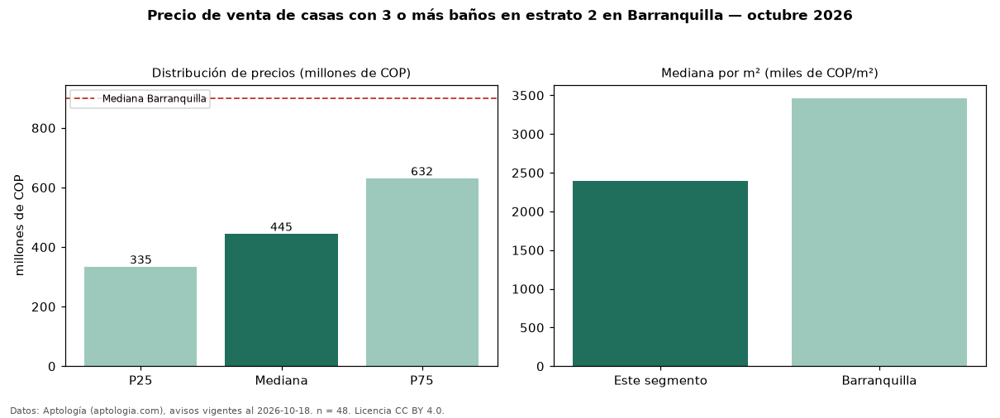

Precio de venta de casas con 3 o más baños en estrato 2 en Barranquilla — octubre 2026
COP 445 millones es el precio mediano de casas con 3 o más baños en estrato 2 en venta en Barranquilla (n = 48 avisos). Eso es 39 % más que la mediana de las casas en estrato 2 en venta de Barranquilla (COP 320 millones, n = 121); este segmento reúne el 40 % de esos avisos. Por metro cuadrado, la mediana es COP 2,39 millones/m² (n = 48), 2 % por debajo de las casas en estrato 2 en venta de Barranquilla (COP 2,43 millones/m²). El área mediana anunciada es 197 m². El segmento con más oferta es el de 3 o más habitaciones (46 avisos, mediana COP 445 millones). La mitad central de los avisos va de COP 335 millones a COP 632 millones (razón 1,9), una dispersión moderada. La mediana de todas las casas en venta de Barranquilla es COP 900 millones (−51 % de diferencia). 64 % de los avisos con el dato declara parqueadero. Datos: Aptología (aptologia.com), CC BY 4.0 — https://www.aptologia.com/venta/barranquilla. Archivos: PDF, CSV con las cifras y gráfica PNG.

| Avisos únicos | 48 |
|---|---|
| Percentil 25 | COP 335.000.000 |
| Mediana | COP 445.000.000 |
| Percentil 75 | COP 631.624.750 |
| Mediana por m² | COP 2.389.805 |
Fuente: avisos vigentes de portales inmobiliarios recopilados por Aptología, deduplicados (mínimo 30 avisos únicos por celda). Precios pedidos, no cerrados. Fecha: 2026-10-18.